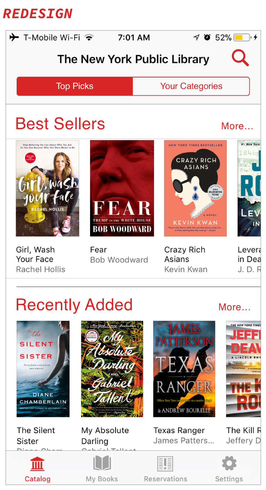
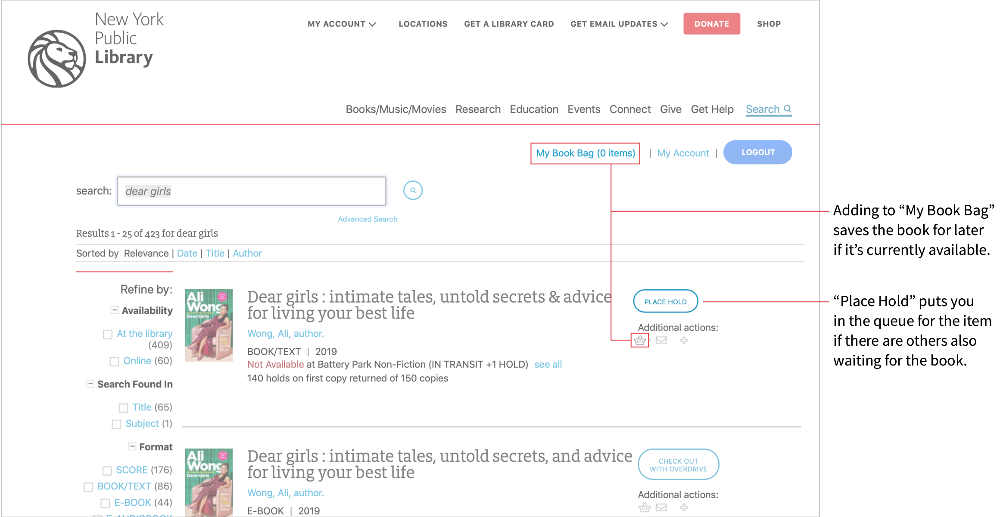

NYPL e-Reader App
The New York Public Library (NYPL) has been an essential provider of free books, information, ideas, and education for all New Yorkers for more than 100 years. The NYPL e-reader app allows users to instantly borrow from the library's collection of more than 300,000 e-books in just a few easy steps.
The Problem
Taking an in-depth look at the library's existing e-reader app, I discovered a couple of problems in it's structure.
There were a few problems I found in the current app design:
- there wasn't a way for user to read the title of the book until they clicked on the book (unless they had impeccable vision to read it off the cover),
- there wasn't a way for users to find books in genres of their liking, unless they knew exactly what they were looking for,
- there wasn't a way in the app to save books users were interested in, but didn't have the time to read right away.
Simple Touches For Big Impact
These issues were solved while also upping the animation styling for the app to provide a more delightful user experience.
1. The Home Screen
Using the existing app, it was difficult to read the title of the books in the selection without taking another step to read more about the book.
This was addressed this by making the book covers larger and adding the title and author under it so it was more visual and easier to read.
-

- 
2. Simply For You
The existing app doesn't take the user's reading preferences into consideration. They have these generic sections set up that the user may or may not care about. To solve for this, a separate tab that would allow the user to customize their sections was created so they can view books they might be interested in.

3. Books on Your Time
There are times where you want to read a certain book, but timing just isn't right and you don't want to forget about it. In their website, there's a way to either hold (if there's a queue for it) or to put books in your "book bag", as a way to save the book for later.
That's not an option in the app. This is where the addition of a favoriting function comes in handy.** By favoriting, it goes to the top of Your Categories so you have a reminder for when you are ready to immerse yourself.**